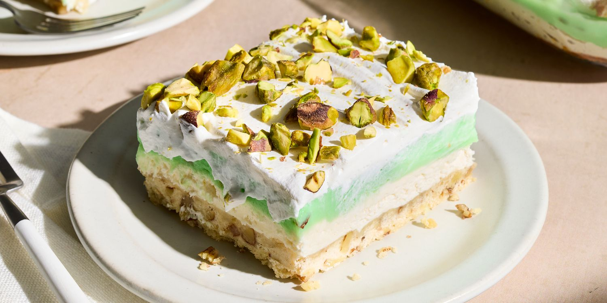

Pistachio Dessert
Home
This nostalgic pistachio torte has a nutty shortbread crust layered with cream cheese filling, fluffy pistachio topping, and whipped topping. Sweet, crunchy, and creamy, it is reminiscent of the happy desserts of childhood.
This recipe is originally from a close family friend of mine! :D.

Ingredients
- 1 ½ cups flour
- 1 ½ stick softened butter
- 2/3 cups chopped pecans or almonds
- 1 package (8 ounces) cream cheese, softened
- 1 cup powdered sugar
- 12 ounces non-dairy whipped topping
- 2 packages (3 3/4 ounces each) instant pistachio pudding
- 3 cups milk
- 1 teaspoon vanilla or almond extract
Instructions
- Combine flour, butter, and nuts.
- Press mixture into 9-by-13 inch pan.
- Bake at 350 degrees for 30 minutes.
- Beat the cream cheese, vanilla or almond extract, powdered sugar, and whipped topping together until smooth.
- Spread the mixture over cooled crust.
- Combine pudding with milk and beat until thickened
- Pour over cream cheese layer.
- Refridgerate until firm.